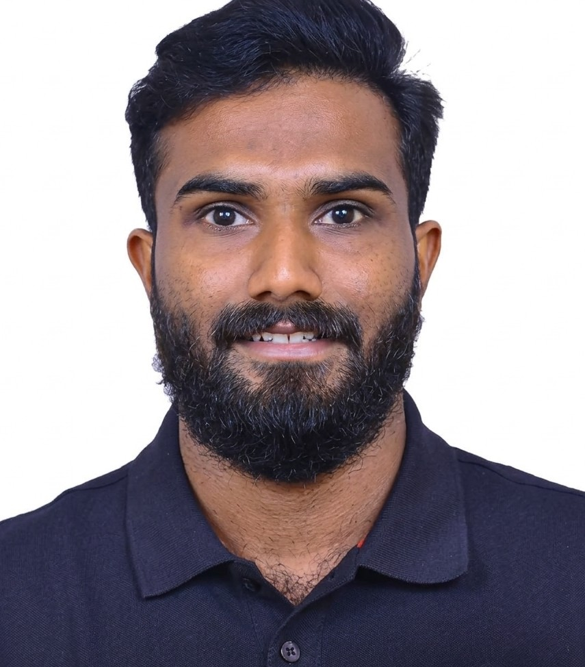

Embedded Software Engineer | Automotive Systems | AI/ML Enthusiast
Download ResumeEmbedded Software Engineer with 6+ years experience in automotive software development including Electronic Braking Systems, Thermal Management and Infotainment systems.
Strong background in C, C++, Python, MATLAB and Model Based Development using Simulink with exposure to Machine Learning, Signal Processing and Embedded Systems.
Embedded Software Engineer (2023 – Present)
Embedded Software Engineer (2020 – 2023)
Biocybernetics and Biomedical Engineering (Elsevier)
View PaperSpringer Conference Paper
View PaperMore publications available on ResearchGate
Email: niyasp.cet@gmail.com
Phone: +91 9633430076